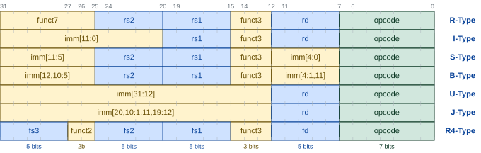
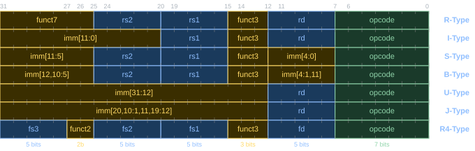

Referència tècnica
RV32I
Registres
Propòsit general
| ISA | ABI | Propòsit | Qui el guarda (Saver) |
|---|---|---|---|
x0 |
zero |
El valor constant zero | NA |
x1 |
ra |
Adreça de retorn (return address) de subrutina | Caller |
x2 |
sp |
Punter de pila (stack pointer), adreça del cim de la pila | Callee |
x3 |
gp |
Punter global (global pointer) | – |
x4 |
tp |
Punter de fil (thread pointer) | – |
x5–x7 |
t0–t2 |
Temporals | Caller |
x8 |
s0 / fp |
Segur / Punter de marc (frame pointer). | Callee |
x9 |
s1 |
Segur | Callee |
x10, x11 |
a0, a1 |
Arguments de subrutines / Valors de retorns | Caller |
x12–x17 |
a2–a7 |
Arguments de subrutines | Caller |
x18–x27 |
s2–s11 |
Segurs | Callee |
x28–x31 |
t3–t6 |
Temporals | Caller |
Vegeu RISC-V 2.22.
Caller-saved i callee-saved
| Categoria | Registres ABI | Qui els preserva |
|---|---|---|
| Temporals i arguments | t0–t6, a0–a7 |
Caller (la subrutina que fa la crida) |
| Adreça de retorn | ra |
Caller (la subrutina que fa la crida) |
| Segurs | s0–s11, sp |
Callee (la subrutina cridada) |
Vegeu RISC-V 3.24.
Format de les instruccions


Vegeu RISC-V 2.21, RISC-V 2.24, RISC-V 2.25, RISC-V 3.6, RISC-V 3.16 i RISC-V 3.10.
Instruccions
Aritmètica entera
| Mnemònic | Operands | Operació | Nom | Tipus |
|---|---|---|---|---|
add |
rd, rs1, rs2 |
\(rd ← rs1 + rs2\) | add | R |
addi |
rd, rs1, imm12 |
\(rd ← rs1 + SignExt(imm12)\) | add immediate | I |
sub |
rd, rs1, rs2 |
\(rd ← rs1 - rs2\) | subtract | R |
lui |
rd, imm20 |
\(rd ← imm20 << 12\) | load upper immediate | U |
Vegeu RISC-V 2.11 i RISC-V 2.12.
Lògica bit a bit
| Mnemònic | Operands | Operació | Nom | Tipus |
|---|---|---|---|---|
and |
rd, rs1, rs2 |
\(rd \leftarrow rs1 \text{ and } rs2\) | and | R |
andi |
rd, rs1, imm12 |
\(rd \leftarrow rs1 \text{ and } SignExt(imm12)\) | and immediate | I |
or |
rd, rs1, rs2 |
\(rd \leftarrow rs1 \text{ or } rs2\) | or | R |
ori |
rd, rs1, imm12 |
\(rd \leftarrow rs1 \text{ or } SignExt(imm12)\) | or immediate | I |
xor |
rd, rs1, rs2 |
\(rd \leftarrow rs1 \text{ xor } rs2\) | exclusive or | R |
xori |
rd, rs1, imm12 |
\(rd \leftarrow rs1 \text{ xor } SignExt(imm12)\) | exclusive or immediate | I |
Vegeu RISC-V 3.3.
Desplaçaments de bits
| Mnemònic | Operands | Operació | Nom | Tipus |
|---|---|---|---|---|
sll |
rd, rs1, rs2 |
\(rd \leftarrow rs1 \,<<\, rs2[4:0]\) | shift left logical | R |
slli |
rd, rs1, shamt |
\(rd \leftarrow rs1 \,<<\, shamt\) | shift left logical | I |
srl |
rd, rs1, rs2 |
\(rd \leftarrow rs1 \,>>\, rs2[4:0]\) | shift right logical | R |
srli |
rd, rs1, shamt |
\(rd \leftarrow rs1 \,>>\, shamt\) | shift right logical | I |
sra |
rd, rs1, rs2 |
\(rd \leftarrow rs1 \,>>> rs2[4:0]\) | shift right arithmetic (register) | R |
srai |
rd, rs1, shamt |
\(rd \leftarrow rs1 \,>>> shamt\) | shift right arithmetic (immediate) | I |
Vegeu RISC-V 3.1 i RISC-V 3.2. Vegeu EC 3.2 per a la notació >>>
Comparació
| Mnemònic | Operands | Operació | Nom | Tipus |
|---|---|---|---|---|
slt |
rd, rs1, rs2 |
\(rd \leftarrow (rs1 < rs2) \,?\, 1 : 0 \quad (\mathbb{Z})\) | set less than | R |
sltu |
rd, rs1, rs2 |
\(rd \leftarrow (rs1 < rs2) \,?\, 1 : 0 \quad (\mathbb{N})\) | set less than unsigned | R |
slti |
rd, rs1, imm12 |
\(rd \leftarrow (rs1 < SignExt(imm12)) \,?\, 1 : 0 \quad (\mathbb{Z})\) | set less than immediate | I |
sltiu |
rd, rs1, imm12 |
\(rd \leftarrow (rs1 < SignExt(imm12)) \,?\, 1 : 0 \quad (\mathbb{N})\) | set less than immediate unsigned | I |
Vegeu RISC-V 3.5.
Càrrega i emmagatzemament
| Mnemònic | Operands | Operació | Nom | Tipus |
|---|---|---|---|---|
lw |
rd, offset(rs1) |
\(rd \leftarrow M_w[rs1 + SignExt(offset)]\) | load word | I |
lh |
rd, offset(rs1) |
\(rd \leftarrow SignExt(M_h[rs1 + SignExt(offset)])\) | load half | I |
lhu |
rd, offset(rs1) |
\(rd \leftarrow ZeroExt(M_h[rs1 + SignExt(offset)])\) | load half unsigned | I |
lb |
rd, offset(rs1) |
\(rd \leftarrow SignExt(M_b[rs1 + SignExt(offset)])\) | load byte | I |
lbu |
rd, offset(rs1) |
\(rd \leftarrow ZeroExt(M_b[rs1 + SignExt(offset)])\) | load byte unsigned | I |
sw |
rs2, offset(rs1) |
\(M_w[rs1 + SignExt(offset)] \leftarrow rs2\) | store word | S |
sh |
rs2, offset(rs1) |
\(M_h[rs1 + SignExt(offset)] \leftarrow rs2_{15..0}\) | store half | S |
sb |
rs2, offset(rs1) |
\(M_b[rs1 + SignExt(offset)] \leftarrow rs2_{7..0}\) | store byte | S |
Vegeu RISC-V 2.26.
Salts condicionals
| Mnemònic | Operands | Operació | Nom | Tipus |
|---|---|---|---|---|
beq |
rs1, rs2, label |
\(rs1 == rs2 \,?\, PC \leftarrow PC + SignExt(offset13)\) | branch equal | B |
bne |
rs1, rs2, label |
\(rs1 != rs2 \,?\, PC \leftarrow PC + SignExt(offset13)\) | branch not equal | B |
blt |
rs1, rs2, label |
\(rs1 < rs2 \,?\, PC \leftarrow PC + SignExt(offset13) \quad (\mathbb{Z})\) | branch less than | B |
bge |
rs1, rs2, label |
\(rs1 >= rs2 \,?\, PC \leftarrow PC + SignExt(offset13) \quad (\mathbb{Z})\) | branch greater than or equal | B |
bltu |
rs1, rs2, label |
\(rs1 < rs2 \,?\, PC \leftarrow PC + SignExt(offset13) \quad (\mathbb{N})\) | branch less than unsigned | B |
bgeu |
rs1, rs2, label |
\(rs1 >= rs2 \,?\, PC \leftarrow PC + SignExt(offset13) \quad (\mathbb{N})\) | branch greater than or equal unsigned | B |
Vegeu RISC-V 3.7.
Salts incondicionals
| Mnemònic | Operands | Operació | Nom | Tipus |
|---|---|---|---|---|
jal |
rd, label |
\(rd \leftarrow PC + 4; PC \leftarrow PC + SignExt(offset21)\) | jump and link | J |
jalr |
rd, rs1, imm12 |
\(PC \leftarrow rs1 + SignExt(imm12); rd \leftarrow PC_{ant} + 4\) | jump and link register | I |
Vegeu RISC-V 3.11 i RISC-V 3.13.
Pseudoinstruccions
Aritmètiques i de còpia
| Pseudoinstrucció | Operació | Expansió |
|---|---|---|
mv rd, rs |
\(rd \leftarrow rs\) | addi rd, rs, 0 |
neg rd, rs |
\(rd \leftarrow -rs\) | sub rd, x0, rs |
not rd, rs |
\(rd \leftarrow \sim rs\) | xori rd, rs, -1 |
Vegeu RISC-V 2.13, RISC-V 3.4 i RISC-V 4.1.
li
li
| Pseudoinstrucció | Condició | Expansió |
|---|---|---|
li rd, imm12 |
imm12 ∈ [-2048, 2047] | addi rd, zero, imm12 |
li rd, imm32 |
\(lo_{12}(\texttt{imm32}) = 0\) | lui rd, hi_20(imm32) |
li rd, imm32 |
\(lo_{12}(\texttt{imm32}) \neq 0\) | lui rd, hi_20(imm32)addi rd, rd, lo_12(imm32) |
Vegeu RISC-V 2.14.
Salt condicional
| Pseudoinstrucció | Expansió |
|---|---|
bgt rs1, rs2, label |
blt rs2, rs1, label |
ble rs1, rs2, label |
bge rs2, rs1, label |
bgtu rs1, rs2, label |
bltu rs2, rs1, label |
bleu rs1, rs2, label |
bgeu rs2, rs1, label |
Vegeu RISC-V 3.8.
Salt condicional amb zero
| Pseudoinstrucció | Expansió | Condició |
|---|---|---|
beqz rs, label |
beq rs, zero, label |
salta si rs == 0 |
bnez rs, label |
bne rs, zero, label |
salta si rs != 0 |
bltz rs, label |
blt rs, zero, label |
salta si rs < 0 |
bgez rs, label |
bge rs, zero, label |
salta si rs ≥ 0 |
bgtz rs, label |
blt zero, rs, label |
salta si rs > 0 |
blez rs, label |
bge zero, rs, label |
salta si rs ≤ 0 |
Vegeu RISC-V 3.9.
Salt incondicional
| Pseudoinstrucció | Expansió | Ús |
|---|---|---|
j label |
jal zero, label |
Salt incondicional relatiu al PC (±1 MiB) |
jr rs |
jalr zero, rs, 0 |
Salt a l’adreça continguda a rs |
ret |
jalr zero, ra, 0 |
Retorn de subrutina |
Vegeu RISC-V 3.12 i RISC-V 3.14.
RV32M
Instruccions
| Mnemònic | Operands | Operació | Nom | Tipus |
|---|---|---|---|---|
mul |
rd, rs1, rs2 |
\(rd \leftarrow (rs1 \times rs2)[31{:}0]\) | Multiply | R |
mulh |
rd, rs1, rs2 |
\(rd \leftarrow (rs1 \times rs2)[63{:}32]\) (enters) | Multiply High | R |
mulhu |
rd, rs1, rs2 |
\(rd \leftarrow (rs1 \times rs2)[63{:}32]\) (naturals) | Multiply High Unsigned | R |
mulhsu |
rd, rs1, rs2 |
\(rd \leftarrow (rs1 \times rs2)[63{:}32]\) (rs1 enter, rs2 natural) |
Multiply High Signed-Unsigned | R |
div |
rd, rs1, rs2 |
\(rd \leftarrow rs1 \div rs2\) (enters) | Divide | R |
divu |
rd, rs1, rs2 |
\(rd \leftarrow rs1 \div rs2\) (naturals) | Divide Unsigned | R |
rem |
rd, rs1, rs2 |
\(rd \leftarrow rs1 \bmod rs2\) (enters) | Remainder | R |
remu |
rd, rs1, rs2 |
\(rd \leftarrow rs1 \bmod rs2\) (naturals) | Remainder Unsigned | R |
Vegeu RISC-V 4.2 i RISC-V 4.3.
RV32F
Registres
Coma flotant
| ISA | ABI | Propòsit | Qui el guarda |
|---|---|---|---|
f0–f7 |
ft0–ft7 |
Temporals | Caller |
f8–f9 |
fs0–fs1 |
Segurs | Callee |
f10–f11 |
fa0–fa1 |
Arguments de subrutines / Valors de retorns | Caller |
f12–f17 |
fa2–fa7 |
Arguments de subrutines | Caller |
f18–f27 |
fs2–fs11 |
Segurs | Callee |
f28–f31 |
ft8–ft11 |
Temporals | Caller |
Vegeu RISC-V 5.2.
Control (fcsr)
fcsr
Instruccions
Càrrega i emmagatzemament
| Mnemònic | Operands | Operació | Nom | Tipus |
|---|---|---|---|---|
flw |
rd, offset(rs1) |
\(rd \leftarrow M_w[rs1 + SignExt(offset)]\) | Float Load Word | I |
fsw |
rs2, offset(rs1) |
\(M_w[rs1 + SignExt(offset)] \leftarrow rs2\) | Float Store Word | S |
Vegeu RISC-V 5.4.
Aritmètica
| Mnemònic | Operands | Operació | Nom | Tipus |
|---|---|---|---|---|
fadd.s |
rd, rs1, rs2 |
\(rd \leftarrow rs1 + rs2\) | Float Add | R |
fsub.s |
rd, rs1, rs2 |
\(rd \leftarrow rs1 - rs2\) | Float Subtract | R |
fmul.s |
rd, rs1, rs2 |
\(rd \leftarrow rs1 \times rs2\) | Float Multiply | R |
fdiv.s |
rd, rs1, rs2 |
\(rd \leftarrow rs1 \div rs2\) | Float Divide | R |
fsqrt.s |
rd, rs1 |
\(rd \leftarrow \sqrt{rs1}\) | Float Square Root | R |
fmin.s |
rd, rs1, rs2 |
\(rd \leftarrow \min(rs1, rs2)\) | Float Minimum | R |
fmax.s |
rd, rs1, rs2 |
\(rd \leftarrow \max(rs1, rs2)\) | Float Maximum | R |
Vegeu RISC-V 5.5.
Comparacions
| Mnemònic | Operands | Operació | Nom | Tipus |
|---|---|---|---|---|
feq.s |
rd, rs1, rs2 |
\(rd \leftarrow (rs1 = rs2)\ ?\ 1 : 0\) | Float Equal | R |
flt.s |
rd, rs1, rs2 |
\(rd \leftarrow (rs1 < rs2)\ ?\ 1 : 0\) | Float Less Than | R |
fle.s |
rd, rs1, rs2 |
\(rd \leftarrow (rs1 \leq rs2)\ ?\ 1 : 0\) | Float Less or Equal | R |
Vegeu RISC-V 5.7.
Conversions i moviments
Conversions (amb conversió numèrica):
| Mnemònic | Operands | Operació | Nom |
|---|---|---|---|
fcvt.s.w |
rd, rs1 |
\(rd \leftarrow (float)\ rs1\) | Enter amb signe → flotant |
fcvt.s.wu |
rd, rs1 |
\(rd \leftarrow (float)\ rs1\) | Natural → flotant |
fcvt.w.s |
rd, rs1 |
\(rd \leftarrow (int)\ rs1\) | Flotant → enter amb signe (arrodoniment segons rm; rtz per al cast de C) |
fcvt.wu.s |
rd, rs1 |
\(rd \leftarrow (unsigned)\ rs1\) | Flotant → natural (arrodoniment segons rm; rtz per al cast de C) |
Moviments (còpia de bits sense conversió numèrica):
| Mnemònic | Operands | Operació | Nom |
|---|---|---|---|
fmv.s |
rd, rs1 |
\(rd \leftarrow rs1\) | Float Move (pseudo) |
fmv.w.x |
rd, rs1 |
\(rd \leftarrow rs1\) | Enter → flotant (bits) |
fmv.x.w |
rd, rs1 |
\(rd \leftarrow rs1\) | Flotant → enter (bits) |
Vegeu RISC-V 5.8 i RISC-V 5.6.
Zicsr
Instruccions
| Mnemònic | Operands | Operació | Nom | Tipus |
|---|---|---|---|---|
csrr |
rd, csr |
\(rd \leftarrow csr\) | CSR read (pseudoinstrucció) | I |
csrw |
csr, rs1 |
\(csr \leftarrow rs1\) | CSR write (pseudoinstrucció) | I |
csrrw |
rd, csr, rs1 |
\(rd \leftarrow csr; \ csr \leftarrow rs1\) | CSR read/write | I |
csrrs |
rd, csr, rs1 |
\(rd \leftarrow csr; \ csr \leftarrow csr \text{ or } rs1\) | CSR read and set bits | I |
csrrc |
rd, csr, rs1 |
\(rd \leftarrow csr; \ csr \leftarrow csr \text{ and not } rs1\) | CSR read and clear bits | I |
Vegeu RISC-V 9.2.
Excepcions i interrupcions
Instruccions
ecall i ebreak
| Mnemònic | Operands | Operació | Nom |
|---|---|---|---|
ecall |
— | Causa excepció (crida al sistema) | Environment call |
ebreak |
— | Causa excepció (punt de parada) | Environment break |
Vegeu RISC-V 9.11.
mret
| Mnemònic | Operands | Operació | Nom |
|---|---|---|---|
mret |
— | \(MIE \leftarrow MPIE; \ MPIE \leftarrow 1; \ mode \leftarrow MPP; \ MPP \leftarrow U; \ PC \leftarrow mepc\) | Machine return |
Vegeu RISC-V 9.10.
sfence.vma
| Mnemònic | Operands | Operació | Nom |
|---|---|---|---|
sfence.vma |
rs1, rs2 |
Invalida les entrades del TLB per a l’adreça rs1 i l’ASID rs2 (x0 = totes) |
Supervisor fence |
Vegeu RISC-V 9.16.
Registres CSR
mcause — Valors més rellevants
| Bit 31 | Codi | Causa |
|---|---|---|
| 0 | 0 | Instrucció mal alineada |
| 0 | 1 | Error d’accés a instrucció |
| 0 | 2 | Instrucció il·legal |
| 0 | 3 | Punt de parada (ebreak) |
| 0 | 4 | Lectura de dada mal alineada |
| 0 | 5 | Error d’accés en lectura de dada |
| 0 | 6 | Escriptura de dada mal alineada |
| 0 | 7 | Error d’accés en escriptura de dada |
| 0 | 8 | Crida al sistema des de mode U (ecall) |
| 0 | 9 | Crida al sistema des de mode S (ecall) |
| 0 | 11 | Crida al sistema des de mode M (ecall) |
| 0 | 12 | Fallada de pàgina en cerca d’instrucció |
| 0 | 13 | Fallada de pàgina en lectura |
| 0 | 15 | Fallada de pàgina en escriptura/AMO |
| 1 | 3 | Interrupció de programari en mode M |
| 1 | 7 | Interrupció de temporitzador en mode M |
| 1 | 11 | Interrupció externa (E/S) en mode M |
Vegeu RISC-V 9.4.
mepc


mstatus


mtvec


mip i mie


| Bit | Nom mip |
Nom mie |
Tipus d’interrupció |
|---|---|---|---|
| 11 | MEIP |
MEIE |
Externa (E/S) en mode M |
| 9 | SEIP |
SEIE |
Externa (E/S) en mode S |
| 7 | MTIP |
MTIE |
Temporitzador en mode M |
| 5 | STIP |
STIE |
Temporitzador en mode S |
| 3 | MSIP |
MSIE |
Programari en mode M |
| 1 | SSIP |
SSIE |
Programari en mode S |
Vegeu RISC-V 9.8.
| Registre mode M | Registre mode S | Funció |
|---|---|---|
mcause |
scause |
Codi de causa de l’excepció o interrupció |
mepc |
sepc |
Adreça de retorn |
mstatus |
sstatus |
Estat global (subconjunt dels bits de mstatus) |
mtvec |
stvec |
Adreça de la rutina de servei |
mip |
sip |
Peticions d’interrupció pendents |
mie |
sie |
Màscares d’interrupció |
Vegeu RISC-V 9.9.
| Registre | Nom complet | Funció |
|---|---|---|
satp |
Supervisor Address Translation and Protection | Mode de traducció i adreça física de la taula de pàgines de primer nivell |
stval |
Supervisor Trap Value | Adreça virtual que ha causat la fallada de pàgina |
Vegeu RISC-V 9.14.
satp


RARS
Mapa de memòria
| Segment | Tipus | Adreça inicial | Contingut | Creix cap a |
|---|---|---|---|---|
.text |
Estàtic | 0x00400000 |
Codi màquina (instruccions) | adreces altes |
.data |
Estàtic | 0x10010000 |
Variables globals | adreces altes |
| heap | Dinàmic | 0x10040000 |
Variables dinàmiques (malloc()/free()) |
adreces altes |
| Pila | Dinàmic | 0x7FFFFFFC |
Variables locals, registres desats | adreces baixes |
| kernel | Estàtic | 0x80000000 |
Codi i dades del sistema operatiu | adreces altes |
Vegeu RISC-V 3.15.
Directives
| Directiva | Operands | Descripció |
|---|---|---|
.align |
n |
Alinea el següent element a la frontera \(2^n\) bytes |
.ascii |
"cadena" |
Emmagatzema la cadena al segment de dades sense terminador nul |
.asciz |
"cadena" |
Emmagatzema la cadena al segment de dades amb terminador nul |
.byte |
v1, v2, ... |
Emmagatzema els valors com a bytes de 8 bits |
.data |
— | Els elements següents s’emmagatzemen al segment de dades |
.double |
v1, v2, ... |
Emmagatzema els valors com a coma flotant de doble precisió |
.dword |
v1, v2, ... |
Emmagatzema els valors com a paraules dobles de 64 bits |
.eqv |
símbol, expr |
Substitueix el símbol per l’expressió (com #define) |
.float |
v1, v2, ... |
Emmagatzema els valors com a coma flotant de precisió simple |
.globl |
etiqueta |
Declara l’etiqueta com a global (també s’accepta .global) |
.half |
v1, v2, ... |
Emmagatzema els valors com a mitges paraules de 16 bits |
.space |
n |
Reserva n bytes al segment de dades |
.string |
"cadena" |
Àlies de .asciz |
.text |
— | Els elements següents s’emmagatzemen al segment de text |
.word |
v1, v2, ... |
Emmagatzema els valors com a paraules de 32 bits |
.section |
nom |
Especifica una secció; inclòs per compatibilitat amb gcc |
Crides al sistema
a7: codi de servei.a0: argument principal i valor de retorn.
Vegeu RISC-V 9.12.
| Codi | Nom | Arguments | Retorn |
|---|---|---|---|
| 1 | print_int |
a0 = enter |
— |
| 2 | print_float |
fa0 = flotant |
— |
| 4 | print_string |
a0 = adreça string |
— |
| 5 | read_int |
— | a0 = enter |
| 6 | read_float |
— | fa0 = flotant |
| 8 | read_string |
a0 = buffer, a1 = longitud màxima |
— |
| 10 | exit |
— | — |
| 11 | print_char |
a0 = caràcter (ASCII) |
— |
| 12 | read_char |
— | a0 = caràcter (ASCII) |
| 34 | print_hex |
a0 = enter |
— |
| 35 | print_bin |
a0 = enter |
— |
| 36 | print_unsigned |
a0 = enter sense signe |
— |
| 93 | exit2 |
a0 = codi de sortida |
— |
Vegeu RISC-V 9.13.